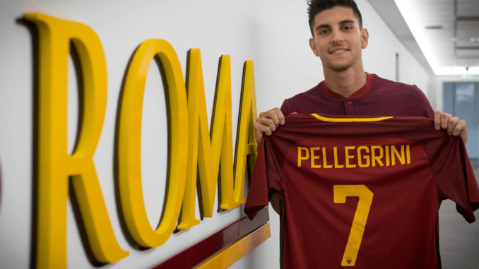
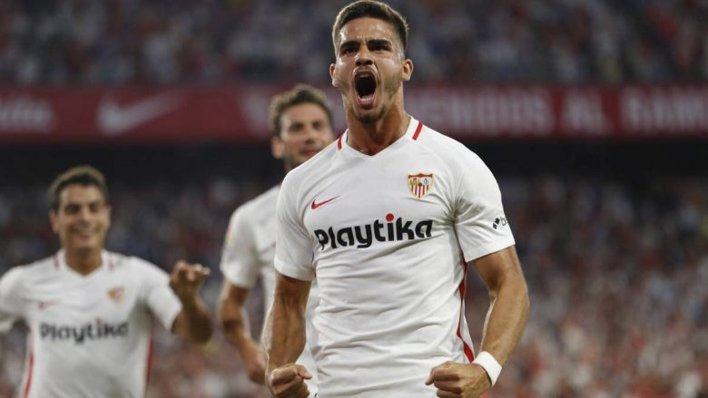
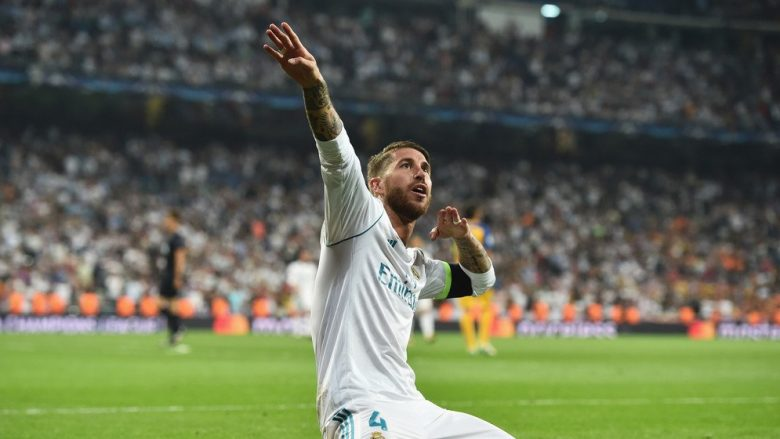
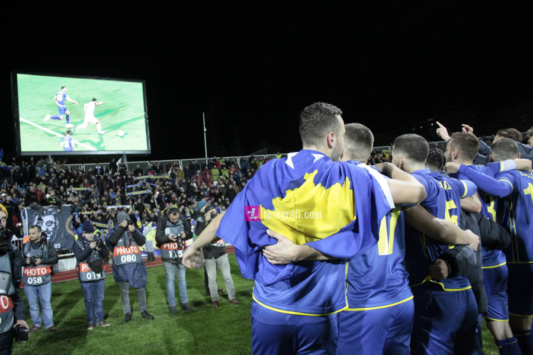

|

United planifikon të paguajë klauzolën e Pellegrinit
Roma duhet të nxitojë për t’i vazhduar kontratën mesfushorit të tyre Lorenzo Pellegrini.
Klubi italian është në bisedime tash e disa kohë me përfaqësuesit e lojtarit për të gjetur një marrëveshje të re.
READ MORE>>
|

Sevilla do ta blejë përfundimisht Andre Silvan
Sevilla do të ushtrojë mundësinë e tyre prej 30 milionë eurosh për të nënshkruar përfundimisht me sulmuesin Andre Silva, pavarësisht se Milani dëshiron që sulmuesi të rikthehet.
Drejtori i klubit Andaluzian, Joaquin Caparros, ka siguruar tifozët e klubit që do të nënshkruajnë me reprezentuesin e Portugalisë përkundër dëshirës së Rossonerëve.
READ MORE>>
|

Sergio Ramos dështoi në testin e dopingut në finalen e Ligës së Kampionëve
Kapiteni i Real Madridit, Sergio Ramos, është kthyer në titujt e gazetave, por jo për arsye që njihet.
Duket se mbrojtësi i Los Blancos ka shkelur rregullat e anti-doping të UEFA-s.
READ MORE>>
|

Dy fitore të thella dhe kalimi në Ligën C të Ligës së Kombeve, Kosova pritet të ketë ngritje në ranglistën e FIFA-s
Përfaqësuesja e Kosovës ka pasur një muaj fantastik, duke marrë dy fitore spektkolare në Ligën e Kombeve.
Dardanët triumfuan me rezultat të thellë 5-0 fillimisht në udhëtim te Malta për ta konfirmuar kualifikimin në Ligën C me një fitore fantastike 4-0 në Prishtinë ndaj Azerbajxhanit.
READ MORE>>
|